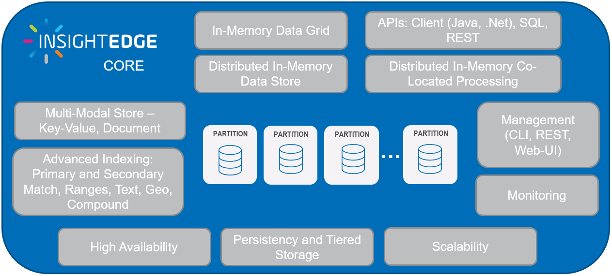

The InsightEdge Portfolio — SmartCache, SmartODS and Smart Augmented Transactions — is based on the InsightEdge Core, which is a distributed In-Memory storage and processing engine.
The platform support multiple data tiers and provides full data lifecycle management, on RAM, SSD/Flash, PMEM, Disk and external data stores. Using the platform, high availability, replication and persistence are provided out-of-the-box, with Multi-Data Center Replication and Data Persistency. The data grid also functions as an application server that enables applications running on the data grid to be scaled out linearly, using Space-Based Architecture (SBA) as a primary design pattern. With SBA, applications are built out of a set of self-sufficient units, known as Processing Units (PU). These units are completely independent of each other, so that the application can scale indefinitely without increasing complexity, just by adding more units. SBA is based on the Tuple Space paradigm. SBA it follows many of the principles of Service-Oriented Architecture and Event-Driven Architecture, as well as elements of grid computing.

Space-Based Remoting
Remote service invocations using Jini Network Architecture that provide location transparency for enterprise-wide data access
Core API and In-Memory Data Grid
Direct access to a RAM-based data grid or Space
Messaging and Events
Object-based event processing, based on and extending the properties of Java EE message-driven beans
Integrations
Integration capabilities with non-
See
See
Smart Cache provides fast, scalable cache from any data store. It is fully SQL-99 compliant, and can connect in one click to any operational data store. Additionally it provides out-of-the-box advanced persistency options.
See
Smart ODS is an advanced Operational Data Store, also referred to as a Digital Integration Hub (DIH), which is an application architecture that aggregates multiple back-end systems of record data sources into a low-latency and scale-out, high-performance data store that can host server side applications for co-located data and processing for optimal performance.
Operations can be managed in a fully transactional interface. It also provides remote replication of data to other clusters on-prem or in the cloud.
See
Smart Augmented Transactions is an in-memory Translytical platform that unifies streaming, real-time transactional and analytical processing capabilities, which augments the Smart ODS capabilities with Spark and Machine Learning and Deep Learning capabilities.
See
consists of three products: Smart Cache, Smart ODS and Smart Augmented Transactions.
Smart Cache provides fast, scalable cache from any data store.
Smart ODS is an integrated, enterprise-wide data store that allows you to create a new Operational Data Store (Digital Integration Hub) or augment your existing data store.
Smart Augmented Transactions provides translytical processing for fast access, updating and analysis of enterprise-critical information.
Smart Portfolio meets the following critical design criteria:
High-speed in-memory data grid with millisecond-range response time
Multi-tiered data storage across RAM, SSD, and Storage-Class Memory (3DXPoint)
Compressed RAM footprint
Optimized data co-location for fast Join performance
Highly available, always-on data backup
Disaster recovery via geo-redundancy, fast data replication and native persistence
Data persistency with low latency and strong consistency
Atomic, transaction-based processing
Support for complex SQL-99 compliant queries
Distributed processing partitions, with Wide Area Network support
Automatic, trigger-driven vertical and horizontal scaling
Minimally-invasive installation
| Feature | SmartCache | SmartODS | Smart Augmented Transactions |
|---|---|---|---|
| Cloud, On-premise & Hybrid | |||
| 1-click cloud deployment | |||
| SQL | |||
| Auto Tiering (Hot, Warm, Cold) | |||
| Pre-built Codeless DB Connectors | |||
| Server Side aggregations | |||
| Support for multiple indexes | |||
| Multi-Model Store (Un/Semi/Structured) | |||
| Strong Consistency (ACID) | |||
| Federation of Multiple data stores | |||
| Microservices | |||
| Kafka | |||
| Multi-Region Replication | |||
| EDA (Event Driven Analytics) | |||
| Spark | |||
| Combined transaction & analytical processing | |||
| Data Lake Indexing (AnalyticsXtreme) | |||
| Deep Learning (Tensor, Caffe & Torch) |
Click for More Details: